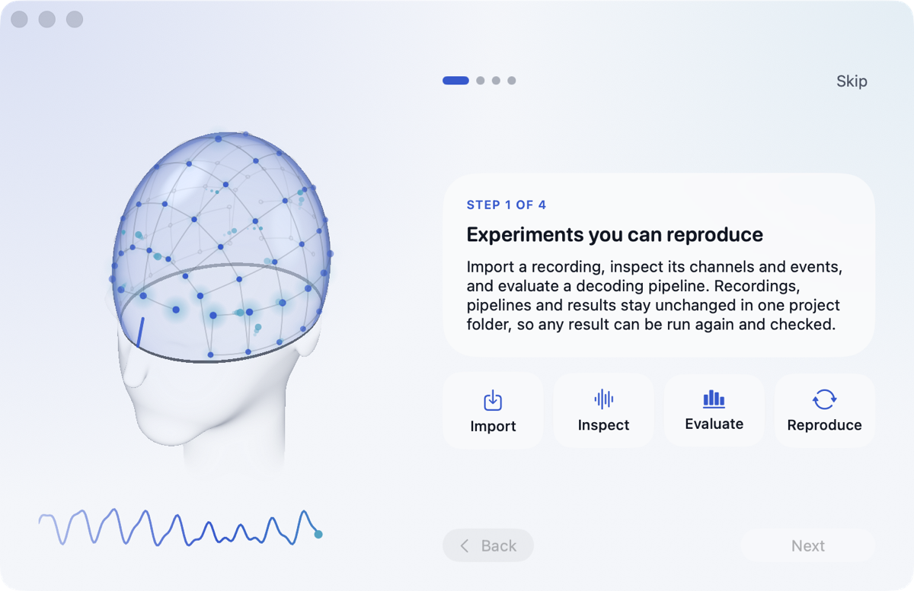
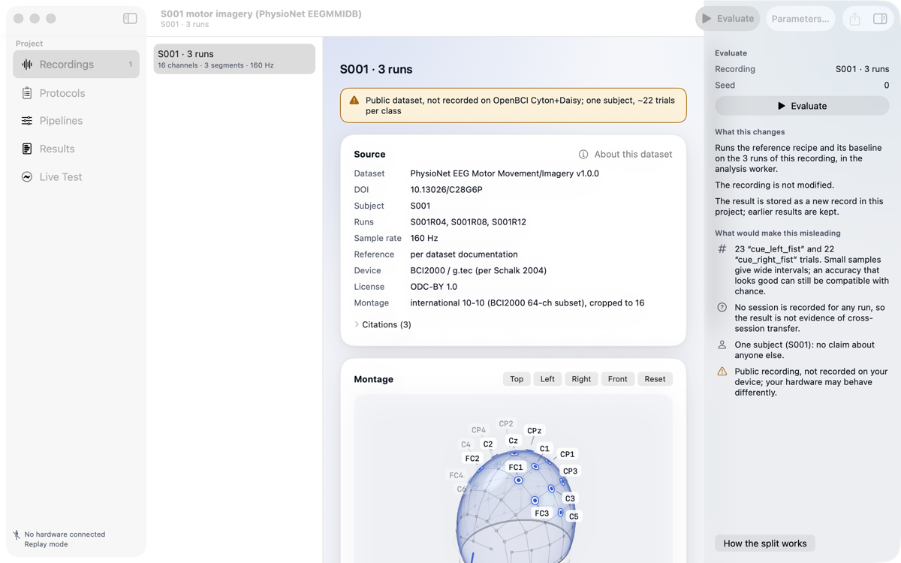
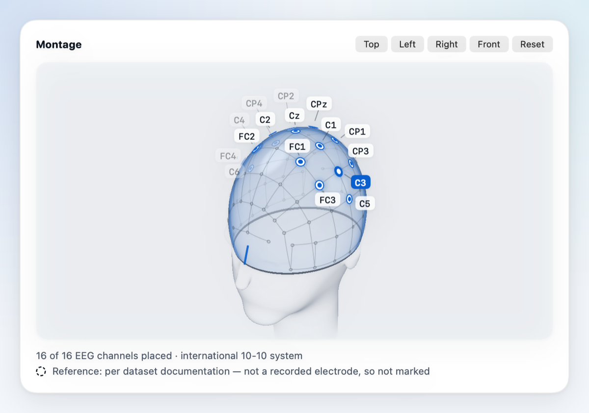
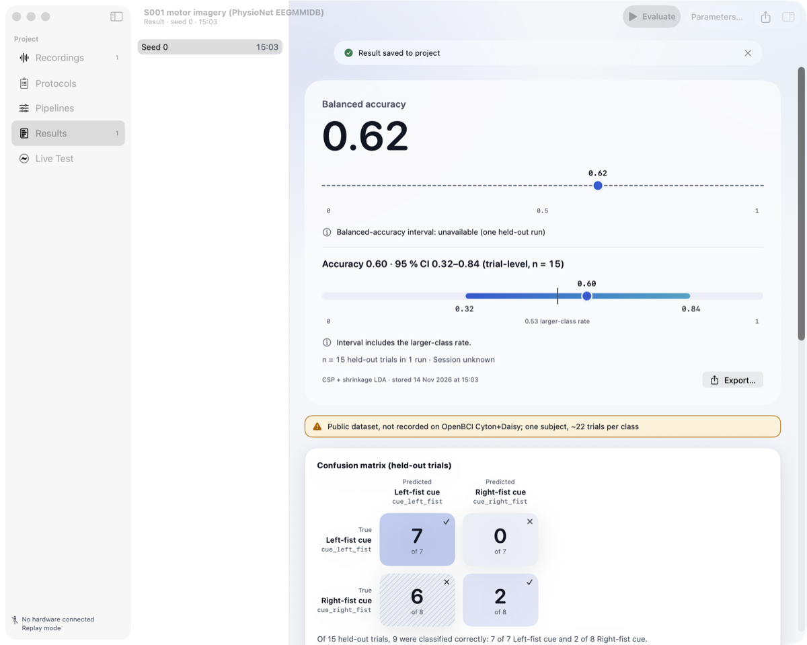
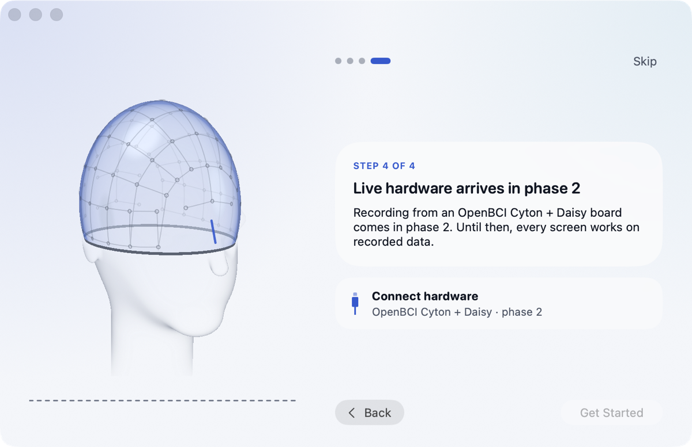

BCI Workspace
A native Mac app for inspecting, evaluating and reproducing a brain-computer interface experiment, with the uncertainty shown next to every number.
Apple Silicon · macOS 15 or later · signed and notarized · free

What you can do today
Version 0.1 covers recorded data from start to finish. It needs no EEG hardware and no terminal: the app ships with a public recording and its own analysis engine.
-
Open the bundled example
Choose “Explore an example” and the app creates a project from a public motor-imagery recording: subject S001 of the PhysioNet EEG Motor Movement/Imagery dataset, three imagery runs with left-fist and right-fist cues.
The recording is labelled for what it is. It was not made on OpenBCI hardware, it is one person, and it has about 22 trials per class.
- Dataset
- PhysioNet EEG Motor Movement/Imagery v1.0.0
- Runs
- S001R04, S001R08, S001R12
- Channels
- 16 sensorimotor channels, cropped from 64, international 10-10 positions
- Sample rate
- 160 Hz, as recorded, not resampled
- Events
- Left-fist cue, right-fist cue and rest, from the file’s annotations
- License
- ODC-BY 1.0, citations shown in the app and in every export
-
Inspect a recording
Before anything is fitted, check what you are fitting on.
- Source and provenance: dataset, DOI, runs, device, license and every conversion step.
- Channels with their declared montage and reference, placed on a 3D head you can turn.
- Continuous segments and the gaps between them.
- The event table, with each event’s onset sample.
The side panel says what the evaluation will change and what could make its result misleading.


The head shows declared positions and the reference only. A recording without a declared montage is marked “undeclared”; the app never guesses positions from the channel count. -
Evaluate against a frozen holdout
The reference pipeline is a causal 8–30 Hz band-pass, CSP and shrinkage LDA. Whole runs are held out before anything is fitted. The result page shows:
- Balanced accuracy on the held-out run.
- Accuracy with a 95 % interval computed over trials (trial-level), with the number of trials it rests on.
- A run-level interval for balanced accuracy only when two or more runs are held out; otherwise it says “unavailable”.
- The confusion matrix and class counts.
- A simpler log-variance baseline to compare against.
- Trials excluded for filter warm-up, each one listed.
- The seed that chooses the held-out runs.

A result for the bundled example, shown as the app draws it. One held-out run is only 15 trials, so the interval is wide; that is the honest answer for this data, not a measure of what the method can do. -
Reproduce and export
Every result stores its full configuration, seed and worker versions. Run it again with the same recording, settings and seed and the evaluation record comes out byte-identical on the same machine with the same bundled worker. The rerun is saved as a reproduction linked to the original.
File ▸ Export Result writes a documented folder you can read without the app: flat binary samples, JSON and JSON Lines, and one
.npzof plain arrays.result/ recording.json manifest and sample layout segment-<run>.f64 float64 samples, one file per segment events.jsonl one event per line, as stored channels.json rate, reference, montage, channels pipeline.json configuration, seed, hashes model.npz fitted arrays, model and baseline evaluation.json byte-identical to the stored record result.meta.json versions, durations, reproduction link ATTRIBUTION.md dataset source, license, citations
How results are kept honest
A motor-imagery classifier can look good for the wrong reasons. These rules are built into the app rather than left to the person running it.
- Everything is fitted on training data only
- CSP, the classifier and any normalisation are fitted inside the training fold. The held-out data never informs a fitted value.
- Splits are by run, never by window
- Overlapping windows from one trial are not independent, so whole runs go to training or to the holdout. The holdout is frozen before fitting starts.
- Offline filtering replays the live path
- The band-pass is causal and runs once over each continuous segment from a zero state, as it would live. Trials are cut afterwards, and trials inside the filter warm-up are excluded and listed.
- Uncertainty and a baseline come with every number
- The interval is reported at the trial level and labelled as such, beside a simpler log-variance baseline. A wide interval or a negative result is a valid outcome.
- Channel positions are declared, never guessed
- Montages come from an explicit channel map. Sixteen channels do not imply a 10-20 layout; missing positions are shown as undeclared.
- Raw data is never altered
- Samples are not interpolated, and bursty arrival times are not treated as an irregular sampling clock. Gaps are recorded as gaps.
- Two classes do not mean “no intent”
- A left-versus-right classifier always picks one of the two. Recognising rest or idle needs its own data; holding back an answer below a confidence level is a policy, not evidence of idle detection.
Coming later
None of this is in version 0.1. The app says so too: “Connect hardware” on the welcome screen is disabled until phase 2.
-
In progress, not yet available
Signal-quality inspection
Spectra, flatline, clipping, mains and outlier checks, each naming the rule it applied. A clean signal will not be presented as proof of neural origin.
-
Phase 2, not yet available
Live OpenBCI Cyton + Daisy acquisition
Sixteen channels through the USB dongle, with sequence numbers, gaps and reconnects recorded explicitly and every session written to disk as it arrives.
-
Phase 2, not yet available
Cued protocols and live feedback
A seeded, cued two-class protocol, then the same frozen pipeline run live, with abstention, stale data and disconnection shown as explicit states.
